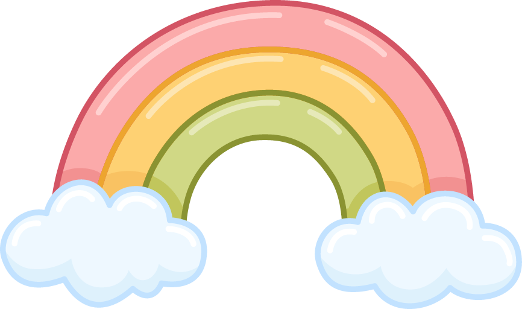
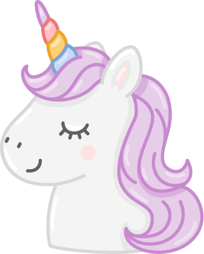
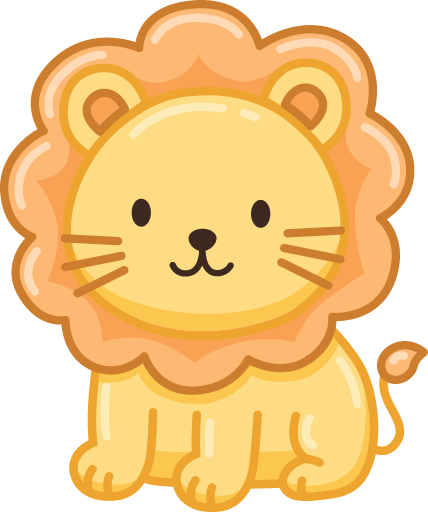
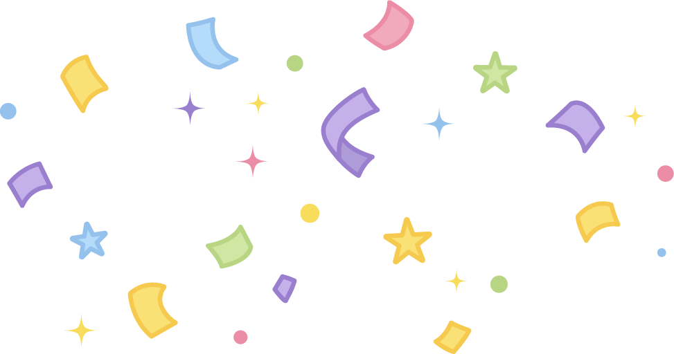

One More Unicorn
Unicorn 0Sisa waktu 60s

Singa 0
Kumpulkan unicorn sebanyak-banyaknya!
One More Unicorn
Tap untuk bergerak, drag untuk mengubah arah. Kumpulkan unicorn dan hindari singa selama 1 menit.
Pilih Mulai main atau tekan Enter